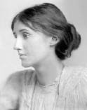

(1882 – 1941)

Kadının bireysel özgürlüğünün edebiyattaki en büyük sesiydi Virginia Woolf. Bir yandan sinirsel, bir yandan da entelektüel bunalımlar yaşayan sanatçı, kadının en içten duygularını ortaya koyan romanlarıyla tüm dünyaya farklı duygular anlatıyordu. İç dünyasıyla bir türlü barışamaması onu, sonu intiharla biten bir çıkmaza sürükledi.
Dünya kadınlarının edebiyattaki sesi Virginia Woolf (okunuşu: Vircinya Vulf), 25 Şubat 1882'de, İngiltere'nin başkenti Londra'da dünyaya geldi. Hiç okula gitmedi, evde eğitim gördü. Woolf'un aile üyeleri, İngiltere'nin seçkin entelektüellerindendi. Hepsi iyi öğrenim görmüş kişilerdi, üstlendikleri görevler önemliydi. Babası Sïr Leslie Stephen editör, eleştirmen ve biyografi yazarı olarak ünlenmişti. Görkemli kütüphanesi sayesinde kızı, kendini geliştirme fırsatı bulmuştu. Özel öğretmenlerden Latince ve Klasik Yunanca dersleri alan Woolf, henüz dokuz yaşındayken ağabeyi Thoby ile evde Hyde Park Gate News adı altında haftalık bir dergi çıkarmaya başlamıştı. Babasının Viktoryen bağları, sonraları Woolf'un edebi stilini de etkileyecekti.
Annesi grip nedeniyle 1895'te aniden öldüğünde küçük Virginia on üç yaşındaydı. Bu ölüm onu derinden etkiledi ve iki yıl sonra sinir bozukluğuyla kendini gösteren krizlere yol açmaya başladı. Yaşadığı travma ve ağır depresyon, zaman zaman sanrılarla konuşma ve olmayan sesleri işitme gibi halüsinasyonlara dönüşse de tüm bunlar hayatının tamamına yayılmadı. 1904'te babasının kaybından sonra yeni bir krizin eşiğine gelen Woolf'un gerçek yaşama dönmesi uzun zaman aldı.
Profesyonel olarak yazma işine 1905'te başlayan Woolf Times Literary Supplement'e edebi eleştiri yazıları yazıyordu. 1906'da ağabeyi Thoby'nin kardeşleriyle çıktığı bir Yunanistan gezisi sırasında yakalandığı tifodan ölmesi, Woolf için yeni ve başa çıkılamaz bir şok oldu. Thoby'nin ölümünden iki gün sonra ablası Vanessa'nın evlenmesiyle birlikte Virginia'nın yaşamında kısa sürede büyük değişimler gerçekleşmiş oldu. 1909'da Bloomsbury grubundan Lytton Strachey ile nişanlanan Woolf, bir süre sonra anlaşamadıklarını düşündüğü için Strachey'den ayrıldı. Bir yıl sonra bir ruhani çöküş daha yaşayan yazarı, uzun süredir yayımlamayı düşündüğü ilk romanı Dışa Yolculuk için okurdan gelecek tepkiler düşündürüyordu. Aynı zamanda, o dönemde kız kardeşi Vanessa ilk çocuğunun bakımıyla fazlasıyla meşgulken kendisi, eniştesi Clive Bell'le de flört ediyor, ancak bundan büyük rahatsızlık duyuyordu. Woolf'a, incinmişlikleri çok fazla olduğu için doktorlar tarafından yeniden bir dinlenme kürü verildi. İlk romanı Dışa Yolculuk yayımlandığında otuz üç yaşında olan Virginia Woolf'un kitabı, eleştirmenler tarafından övüldü; stiliyse zeki, kurnaz ve yaşam hırsıyla dolu bulundu.
1912'de ağabeyi Thoby'nin arkadaşı, Cambridgeli bir sol kanat siyaset kuramcısı olan Leonard Woolf'la tanışması, Virginia Woolf'un hayatının dönüm noktası oldu. Zira Leonard Woolf, bir ömür boyu onun ruh sağlığının gözeticisi ve yaratıcı kişiliğinin en büyük destekçisi olacaktı. Ancak evlenmeden önce kendisine "Beni bedensel olarak etkilemiyorsun hiç" diye yazacaktı Virginia. Evliliklerinin ilk yıllarında, 1913'ten 1915'e kadar yaşamının en ağır çöküntülerinden birini geçiren Woolf intihar girişiminde de bulundu. Yaşadığı ruhsal bunalım öncekilerin tümünden daha şiddetli ve daha uzun süreli oldu. Nedeni belki de kocası Leonard'ın birçok doktorla konuştuktan sonra evliliğin çocuksuz devamına karar vermiş olmasındandı. Oysaki Virginia Woolf için hamilelik önemli bir konuydu. Bunu yaşamadığı için hayatını başarısızlık olarak görüyor ve kendisini asla tam bir kadın gibi hissedemiyordu. Kendisine her türlü beyinsel uğraş yasaklanan Woolf, bir kliniğe yatırıldı. İyileşmeden geri döndüğü için kocasının onu tekrar kliniğe yatırma girişimlerine şiddetle karşı çıkan yazar, çareyi hayatına son verme girişiminde buldu. Durumu düzelmeyince Woolf çifti biraz da Virginia'ya oyalanacağı bir uğraş bulmak kaygısıyla, 1917 yılında adını yaşadıkları evden alan Hogarth Press yayınevini kurdu. T. S. Eliot, Katherine Mansfield, E. M. Forster gibi günün öncü yazarlarının şiir ve öykülerini basarak aydın çevrelerde kendine saygın bir yer edinen yayınevi, Virginia Woolf'a da yazar olarak büyük özgürlükler sağlıyordu. Bu nedenle zaman zaman taşınması zor bir yüke dönüşse de Woolf çifti bu işi sürdürdü.
1919'da ikinci kitabı Gece ve Gündüz'ü yayımlayan Woolf, bu romanında alışılagelmiş kalıpları izledi. Kahramanlar ilerleyen zaman içinde ve belirli bir olay örgüsü çerçevesinde, birbirleriyle ilişkiler kuruyorlar ve belirli çözümlere varıyorlardı. Bu iki romanın ardından Woolf'un deneyci kişiliği ön plana çıktı ve 1919 tarihli ünlü Modern Roman yazısında savunduğu gibi, yeni dil ve anlatım arayışlarına girişti. En uygun yöntem olarak bilinç akışı tekniğini benimseyen Woolf, 1922 yılında yayınladığı Jacob'un Odası'nda bu tekniği kullanmaya başladı. Aynı yıl Vita Sackville-West'le tanışan ve lezbiyen bir ilişki yaşamaya başlayan Woolf, kadınlara ilgisini daha önce de fark etmişti ve romanlarında bundan bahsediyordu. Bu yüzden bir klasik olan Orlando adlı romanını, sevgilisi Vita Sackville-West'e adadı.
1925'te okuyucuyla buluşacak olan Mrs. Dalloway, yazarın adıyla anılacak 'bilinç akışı' tekniğinin en başarılı örneği oldu. Romanıyla ilgili olarak yazar şu ifadeleri kullanıyordu: "Yaşamı ve ölümü vermek istiyorum. Sağlığı ve çılgınlığı; toplum düzenini eleştirmek istiyorum." Mrs. Dalloway'i 1927'de, en çok beğenilen romanı olan Deniz Feneri takip etti. Çünkü bu romanıyla kendini zamanın öbür yazarlarından ayıran üslubunu geliştirmişti ve kendi roman tekniğine en çok uyan yapıtını vermişti.
1929'da Kendine Ait Bir Oda'yı yayımlayan yazar bu kitabında kadınların yazarlıkta ya da başka mesleklerde söz sahibi olabilmeleri için "kendilerine ait bir oda ve sabit bir gelire sahip olmaları" gerektiğini savundu. Kitaba güleryüzlülük ve yaratıcılık hâkimdi. 1931'de yayımladığı Dalgalar'ı yazarken Virginia Woolf, bu kitapla o güne değin başka hiçbir romancının göze alamayacağı değişik şeyleri yapmak istediğini, bu romanın o güne değin yazılan başka hiçbir romana benzemeyeceğini biliyordu. Çünkü Dalgalar hem düzyazıyla kaleme alınacak hem de şiir, roman ve tiyatro oyunu gibi türlerin karışımı olacaktı.
1937'de Yıllar'ı kaleme alan Woolf, savaştan ve onun yıkıcı etkilerinden oldukça fazla etkileniyordu. Lytton Strachey, Roger Fry, Janet Case ve Lady Ottoline Morrell'in de aralarında bulunduğu tüm eski dostlarını kaybeden Woolf, yeni ve şiddetli bir bunalım daha yaşamaya başladı.
26 Şubat 1941'de Perde Arası'nı bitirdiğinde müsveddesini okuması için Leonard'a veren Woolf, son romanını büyük bir keyifle yazmıştı. Ancak kitabı okuduktan sonra ondan hoşnutsuz olduğunu fark eden Woolf'un depresyonu iyice arttı.
Artık okuyamayan, yazamayan ve aklını hepten yitireceğinden endişe eden Woolf, 28 Mart 1941'de ölmeye hazır olduğunu hissetti. Biri kocası Leonard'a, diğeri lezbiyen partneri Vita Sackville-West'e olmak üzere iki veda mektubu yazan Woolf, Ouse Irmağı'na kadar yürüyüp ceplerine taş doldurdu. Kendini batırmaya yetecek kadar taşla dolduğunda Ouse Irmağı'nın sularına gömülen Woolf'un cesedi ancak 18 Nisan günü bulundu ve kocası yakılan cesedin küllerini Sussex'teki evlerinin bahçesine gömdü.
Seçme Romanları: Dışa Yolculuk (1915 –İletişim Yayınları, 2008), Gece ve Gündüz (1919), Mrs. Dalloway (1925), Deniz Feneri (1927 – Kırmızı Kedi Kitap, İstanbul, 2012), Orlando (1928), Dalgalar (1931)